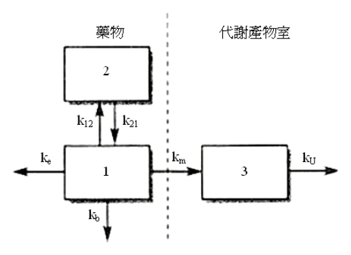

開卷有益 ／
藥師 ／ 藥劑學與生物藥劑學 ／ 102 年第 1 次102 年第 1 次藥師藥劑學與生物藥劑學試題與答案
這一頁是民國 102 年第 1 次藥師藥劑學與生物藥劑學的整份歷屆試題，共 80 題，題目與標準答案出自考選部「國家考試試題及測驗式試題答案」開放資料，其中 78 題附有詳解。以下逐題列出題幹、選項與答案；要計時作答或記錄成績，請用線上練習。
考選部原始場次代碼：102020
線上作答這一科 →
全部 80 題
第 1 題
藥物產品的有效劑量是在臨床研究的那一期（Phase）決定的？
（A） PhaseⅠ（B） PhaseⅡ（C） PhaseⅢ（D） PhaseⅣ答案：（B）
詳解與考點 正解：臨床研究中「有效劑量」的關鍵是先在病人身上建立療效與劑量反應關係，這是 Phase II 的主要工作，故選 B。
A：Phase I 著重安全性、耐受性與藥物動力學，通常尚非以確立治療有效劑量為主要目的。
C：Phase III 在較大規模病人族群確認療效與安全性，並與既有治療或對照組比較；它不是最初決定有效劑量的階段。
D：Phase IV 是上市後監視，可持續發現罕見不良反應與實務使用訊號，時點晚於劑量確立。
本題考點：第二期臨床試驗（Phase II clinical trial）——看到劑量反應與初步療效時，優先判為 Phase II；臨床試驗分期（clinical trial phases）——先用 Phase I 安全性、Phase II 劑量與療效、Phase III 確證、Phase IV 上市後監視來區分。
第 2 題
下列有關阿片樟腦酊之敘述，何者錯誤？
（A） 主要為促進腸道蠕動（B） 每100 mL所含無水嗎啡應為45～55 mg（C） 製備時加入甘油可防止鞣酸（tannin）析出（D） 別名複方樟腦酊答案：（A）
詳解與考點 正解：阿片樟腦酊中的阿片類成分會降低腸道蠕動與腸液分泌，用途是止瀉而不是促進腸蠕動。因此（A）把作用方向寫反，故選 A。
B：阿片樟腦酊是以低劑量阿片配樟腦、安息香酸的複方酊劑，藥典對其每 100 mL 所含無水嗎啡量訂有固定範圍；本項講的是組成規格而非藥理作用方向，故非答案。
C：製備時加入甘油可協助避免鞣酸析出，屬配方安定性的處理，並未把製劑作用方向寫錯。
D：阿片樟腦酊亦稱複方樟腦酊，名稱指出阿片與樟腦的複方製劑特性，故為正確敘述。
本題考點：阿片樟腦酊（camphorated tincture of opium）——遇到止瀉用途時，以阿片類降低腸蠕動判斷；阿片類腸胃道作用（opioid gastrointestinal effects）——分辨促進與抑制蠕動時，記住止瀉來自蠕動下降。
第 3 題
界面活性劑溶液的性質大多在CMC值附近會明顯的改變，下列何者在大於CMC之後，其改變程度 最小？
（A） 助溶程度（solubilization）（B） 界面張力（interfacial tension）（C） 當量導電度（conductivity）（D） 滲透壓（osmotic pressure）答案：（B）
詳解與考點 正解：達到 CMC 前，新增界面活性劑會大量佔據界面並降低 interfacial tension；達到 CMC 後，界面接近飽和，額外分子多形成 micelles，界面張力趨於平臺，改變最小，故選 B。
A：大於 CMC 後形成的 micelles 可容納疏水性藥物，助溶程度仍會隨 micelles 數量增加而改變，不能選。
C：micelle 形成會改變帶電界面活性劑與對離子的移動方式，當量導電度在 CMC 附近常出現斜率改變。
D：單體聚集成 micelles 會改變溶液中獨立粒子的數目，滲透壓對濃度的變化也會在 CMC 附近改變。
本題考點：臨界微胞濃度（critical micelle concentration, CMC）——先判斷系統是否已由單體主導轉為 micelle 主導；界面張力（interfacial tension）——界面飽和後趨於平臺，是判斷大於 CMC 時變化最小的線索。
第 4 題
以Span 20（HLB=8.6）和Tween 20（HLB=16.6）來製備HLB=12.6 的混合界面活性劑100克 時，需Span 20多少克？
（A） 12.5（B） 25（C） 50（D） 75答案：（C）
詳解與考點 正解：目標 HLB 位於 Span 20 的 8.6 與 Tween 20 的 16.6 之間，應以質量加權平均求配比。令 Span 20 為 x g，Tween 20 為 100 - x g：8.6 × x + 16.6 × (100 - x) = 12.6 × 100。展開為 8.6 × x + 1660 - 16.6 × x = 1260，得到 -8 × x = -400，故 x = 50 g。Span 20 需 50 g，故選 C。
A：若 Span 20 為 12.5 g，混合 HLB = (8.6 × 12.5 + 16.6 × 87.5) / 100 = 15.6，高於目標 12.6。
B：若 Span 20 為 25 g，混合 HLB = (8.6 × 25 + 16.6 × 75) / 100 = 14.6，仍高於目標。
D：若 Span 20 為 75 g，混合 HLB = (8.6 × 75 + 16.6 × 25) / 100 = 10.6，低於目標。
本題考點：混合 HLB（mixed hydrophilic-lipophilic balance）——兩種界面活性劑混合時，用各自質量分率作 HLB 加權平均；配比反推——目標值在兩端 HLB 的中點時，兩者質量相等。
第 5 題
依Stokes' law，粒徑為2.5 μm的顆粒其沈降速率是粒徑為0.25 μm顆粒的幾倍？
（A） 0.01（B） 0.1（C） 10（D） 100答案：（D）
詳解與考點 正解：依 Stokes’ law，在其他條件相同時沈降速率 v 與粒徑 d 的平方成正比，即 v ∝ d²。粒徑比為 2.5 μm / 0.25 μm = 10，因此沈降速率比 = 10² = 100，故選 D。
A：0.01 = (0.25 / 2.5)² 是把比較方向顛倒後再平方，代表小顆粒相對大顆粒的速率比，不是題目所求。
B：0.1 是反向的粒徑比而非速率比，且未依 Stokes’ law 對粒徑平方處理。
C：10 只取了粒徑的線性比，忽略沈降速率與 d² 成正比，因而少算一次平方。
本題考點：Stokes’ law——在密度差、重力與介質黏度相同時，沈降速率按粒徑平方改變；比例計算（ratio calculation）——先寫出粒徑比，再平方，單位相同時可先約去。
第 6 題
下列何者為分析粒徑在50 μm以上質粒之常用分析方法？
（A） 光學顯微鏡（B） 電子顯微鏡（C） 沉降法（D） 過篩法答案：（D）
詳解與考點 正解：粒徑在 50 μm 以上屬較粗顆粒，最常用具有標準孔徑的篩網直接分級並計算粒徑分布，因此過篩法最合適，故選 D。
A：光學顯微鏡可直接觀察個別粒子與形貌，但要對大量粗顆粒做常規分級時，效率與代表性不如過篩法。
B：電子顯微鏡主要用於極細粒子與表面微結構觀察，並非 50 μm 以上粉體的常用例行粒徑分析法。
C：沉降法依 Stokes’ law 推算粒徑，較適合可良好分散的細小粒子；對粗顆粒的快速分級不如篩網直接。
本題考點：過篩法（sieve analysis）——粒徑較大時以標準篩孔分級，直接取得各粒徑級分；沉降法（sedimentation method）——細小粒子且可維持分散時，才以沈降速率反推粒徑。
第 7 題
Erythromycin estolate oral suspension中，erythromycin製成酯類型式（ester form）的主要目的 是：
（A） 增加藥物溶解度（B） 降低藥物水解（C） 遮蔽不良藥味（D） 避免結塊答案：（B）
詳解與考點 本題經考選部公告一律給分。Erythromycin estolate將erythromycin酯化，教材上同時強調(C)遮蔽苦味以利兒童服用懸液劑，以及(B)酯化後對胃酸較穩定、可降低於胃中水解破壞而提升吸收，兩項目的在不同藥劑學教材中皆被列為主要考量，難以擇一而生爭議。(A)酯化後脂溶性增加，實際上降低而非增加水溶解度；(D)避免結塊非酯化之主要目的，均可排除。作答以現行藥劑學與生物藥劑學教材為準。
第 8 題
下列有關CH3(CH2)11O(CH2CH2O)8H界面活性劑之描述，何者正確？
（A） 增加(CH2)基團，而(CH2CH2O)基團不變，其曇點（cloud point）上升（B） 減少(CH2)基團，而(CH2CH2O)基團不變，其曇點（cloud point）下降（C） 增加(CH2CH2O)基團，而(CH2)基團減少，其曇點（cloud point）下降（D） 減少(CH2CH2O)基團，而(CH2)基團增加，其曇點（cloud point）上升本題送分，無標準答案
詳解與考點 本題經考選部公告一律給分。就界面活性劑親水親油結構與曇點（cloud point）關係而言，增加疏水性(CH2)基團應使曇點下降、增加親水性(CH2CH2O)基團應使曇點上升，然四選項所述方向與此理論均不完全相符：(A)增加(CH2)卻稱曇點上升、(D)增加(CH2)卻稱曇點上升，均與應下降之理論相反；(C)增加(CH2CH2O)且減少(CH2)理應使曇點上升，選項卻稱下降，方向亦顛倒；僅(B)減少(CH2)使曇點下降之敘述與理論方向相反（應為上升），四項均可能與標準曇點理論不符，致無單一選項可穩定判為正確。作答以現行界面化學曇點與HLB理論為準。
第 9 題
陽離子性藥物與下列何種水溶性膠體不會產生沉澱反應？
（A） Agar（B） Acacia（C） Povidone（D） Pectate答案：（C）
詳解與考點 正解：陽離子性藥物容易與帶負電的水溶性膠體形成離子複合物而沈澱。Povidone 為非離子性高分子，不以陰離子電荷與陽離子性藥物作用，故選 C。
A：Agar 含可帶負電的酸性基團，與陽離子性藥物混合時可能因電荷中和形成不溶性複合物。
B：Acacia 為酸性多醣膠體，帶負電的基團可與陽離子性藥物發生離子性作用；看似只是增稠劑，仍須先判斷其電荷。
D：Pectate 為帶負電的多醣類膠體，最容易與陽離子性藥物形成鹽類或複合物沈澱，故非答案。
本題考點：高分子與藥物相容性（polymer-drug compatibility）——混合前先比較藥物與膠體的電荷，異號電荷要警覺複合與沈澱；Povidone（polyvinylpyrrolidone）——作為非離子性水溶性高分子時，不以簡單電荷中和造成陽離子藥物沈澱。
第 10 題
下列鹽類何者在最少量時，即可造成帶負電荷的金膠溶體產生凝結？
（A） 氯化鈉（B） 鹽酸嗎啡（C） 氯化鈣（D） 硫酸鋁答案：（D）
詳解與考點 正解：帶負電的金膠溶體需要陽離子作為 counterion 來壓縮電雙層並造成凝結。依 Schulze-Hardy rule，反離子的價數愈高，凝結力愈強；硫酸鋁提供 Al3+，所需量最少，故選 D。
A：氯化鈉提供 Na+，只有單價陽離子，對負電膠體的凝結力較弱，需要較多量。
B：鹽酸嗎啡在水中主要提供單價的 morphinium cation，價數仍低於 Ca2+ 與 Al3+，不能用最少量凝結。
C：氯化鈣提供 Ca2+，凝結力大於單價陽離子，但仍低於三價的 Al3+，故不是最少量。
本題考點：Schulze-Hardy rule——判斷電解質凝結膠體時，先找與膠體電荷相反的 counterion，再比較其價數；膠體凝結（coagulation of colloids）——counterion 價數愈高，壓縮電雙層與中和電荷的能力愈強。
第 11 題
有關非離子界面活性劑溶液加熱至某一特定溫度時會因沉澱而呈混濁之敘述，下列何者正確？
（A） 此溫度稱為臨界點（critical point）（B） 此特定溫度會隨濃度上升而上升（C） 此特定溫度會隨分子中ethylene oxide單元增加而上升（D） 此特定溫度會隨分子中碳氫之鏈長增加而上升答案：（C）
詳解與考點 正解：非離子界面活性劑受熱時，polyoxyethylene 鏈與水的水合會減弱而出現混濁；ethylene oxide 單元愈多，親水性愈高，需要更高溫才失去足夠水合，因此（C）正確，故選 C。
A：此特定溫度稱為 cloud point，不是臨界點。分辨關鍵在它描述的是非離子界面活性劑溶液開始混濁的溫度。
B：cloud point 主要由分子結構決定，也就是 ethylene oxide 單元數與碳氫鏈長，受界面活性劑本身濃度的影響甚微，並不會隨濃度上升而上升。
D：碳氫鏈加長會提高疏水性，使混濁較易在低溫出現，cloud point 應下降而非上升。
本題考點：曇點（cloud point）——非離子界面活性劑受熱混濁時，以水合能力判斷；polyoxyethylene 鏈——EO 單元增加會提高親水性與 cloud point，碳氫鏈增加則使方向相反。
第 12 題
在膠體系統中，所謂dilatancy system係指：
（A） 黏滯性會隨切變速率增加而增加（B） 黏滯性會隨切變速率增加而減少（C） 黏滯性會隨切變速率減少而增加（D） 黏滯性不會隨切變速率增加而改變答案：（A）
詳解與考點 正解：dilatancy system 指 shear thickening，切變速率愈高，顆粒排列愈受限制、流動阻力愈大，表觀黏滯性隨之增加。因此（A）正確，故選 A。
B、C：（B）切變速率增加而黏滯性減少，及（C）切變速率減少而黏滯性增加，描述的都是 shear thinning 的方向，屬 pseudoplastic behavior，與 dilatancy 相反。
D：（D）黏滯性不隨切變速率改變是 Newtonian flow 的特徵；dilatancy 的判別重點正是存在正向的切變速率依賴性。
本題考點：膨脹性流動（dilatancy, shear thickening）——切變速率增加時表觀黏滯性增加，判作 dilatant；假塑性流動（pseudoplastic flow）——切變速率增加時表觀黏滯性下降，方向恰與 dilatancy 相反；牛頓流動（Newtonian flow）——黏滯性不隨切變速率改變。
第 13 題
下列敘述何者正確？
（A） 以酸處理過的是明膠A型，等電點為pH 7.0~9.0（B） 以酸處理過的是明膠B型，等電點為pH 4.7~5.0（C） 以鹼處理過的是明膠A型，等電點為pH 4.7~5.0（D） 以鹼處理過的是明膠B型，等電點為pH 7.0~9.0答案：（A）
詳解與考點 正解：明膠的前處理會改變等電點；以酸處理形成的 Type A 明膠等電點約為 pH 7.0–9.0，與選項（A）相符，故選 A。
B：酸處理所得並非 Type B，且較低的 pH 4.7–5.0 是 Type B 的等電點範圍，處理方式與型別對調。
C：以鹼處理確實會得到較低等電點的明膠，但型別應為 Type B，不是 Type A。
D：以鹼處理所得是 Type B；其等電點應在較低的酸性範圍，不能寫成 pH 7.0–9.0。
本題考點：明膠型別（gelatin Type A、Type B）——先依酸處理或鹼處理判定型別，再核對等電點方向；等電點（isoelectric point）——蛋白質經不同處理改變可解離基團比例時，pI 會隨之改變。
第 14 題
下列何者可測量質粒之比表面積？
（A） Air permeability（B） Coulter counter（C） Sedimentation method（D） Sieve analysis答案：（A）
詳解與考點 正解：粉末比表面積可由氣體通過填充粉末床時的阻力推得；Air permeability 利用氣流、壓降與粉末床關係測定比表面積，故選 A。
B：Coulter counter 以電阻脈衝計數並估算顆粒體積，主要得到粒子數與粒徑分布，不是比表面積。
C：Sedimentation method 依沉降速度套用 Stokes’ law 求等效粒徑；它的主要量測結果是粒徑，不能取代直接的比表面積測定。
D：Sieve analysis 依篩網孔徑分離顆粒並得到粒徑分布，未直接量得單位質量或體積的表面積。
本題考點：比表面積測定（specific surface area measurement）——需要由通過粉末床的流體阻力連結到表面積時，選 Air permeability；粒徑分析（particle size analysis）——Coulter counter、sedimentation 與 sieve analysis 的主要輸出是粒徑或粒徑分布，不能和比表面積混為一談。
第 15 題
下列有關o/w乳劑之描述，何者正確？
（A） 此油相為連續相（B） 此油相為內相（C） 此劑型易形成透明狀（D） 此乳劑無須添加界面活性劑答案：（B）
詳解與考點 正解：o/w 表示 oil-in-water，水相是連續相，油相以液滴形式分散在水中；因此油相為內相，故選 B。
A：油相若為連續相、水相為分散液滴，才是 w/o 型乳劑，與 o/w 的命名相反。
C：一般乳劑的液滴會散射光而呈乳白或混濁；透明外觀不是 o/w 乳劑的典型特徵。
D：乳劑需要乳化劑在油水界面降低界面張力並形成保護膜，不能說無須添加界面活性劑。
本題考點：乳劑相態（oil-in-water emulsion）——名稱中在後的相是連續相，故 o/w 的油相是內相；乳化劑作用（emulsifier action）——判斷乳劑安定性時看其是否能覆蓋油水界面並抑制液滴合併。
第 16 題
以毛細管黏度計在相同條件下測量兩種牛頓性液體，其黏滯係數的差異除了通過時間外，另外 為：
（A） 毛細管半徑（B） 毛細管長度（C） 待測液體體積（D） 待測液體密度答案：（D）
詳解與考點 正解：相同條件下以毛細管黏度計比較兩種牛頓性液體時，關係式為 η1/η2 = ρ1t1/ρ2t2；同一儀器的毛細管幾何與量測體積固定，除通過時間 t 外還須知道液體密度 ρ，故選 D。
A：毛細管半徑是儀器的固定幾何條件；在相同條件下比較時不會成為兩液差異的另一個變數。
B：毛細管長度同樣由所用黏度計固定，兩次量測不需各別代入不同長度。
C：兩刻度間的待測液體體積已由量測裝置決定；記錄流經該固定體積的時間即可。
本題考點：毛細管黏度法（capillary viscometry）——同一毛細管下以 ρt 比較牛頓性液體黏度，時間之外要校正密度；牛頓性液體（Newtonian fluid）——剪應力與剪切速率成正比時，黏度可在固定量測條件下用單一常數表示。
第 17 題
下列有關HLB值或乳劑型態之敘述，何者錯誤？
（A） HLB值低之乳化劑，有利於w/o型乳劑之產生（B） 若乳化時，液滴併合速率較快者成為內相（C） 同一物質之required HLB值會因產品是w/o或o/w而不同（D） HLB值之來源與Griffin此人有關答案：（B）
詳解與考點 正解：本題問錯誤敘述；乳化過程中較快併合而形成連續液相的一方是外相，不是內相，因此（B）把內外相的關係顛倒，故選 B。
A：低 HLB 的乳化劑較親油，較適合讓油相成為連續相，故有利於 w/o 型乳劑，這項敘述正確而非答案。
C：同一物質在製備 w/o 與 o/w 乳劑時，所需親水親油平衡不同，故 required HLB 會隨目標乳劑型態改變，這項敘述正確。
D：HLB 系統由 Griffin 提出，這項敘述符合其命名來源，故不是錯誤敘述。
本題考點：連續相判定（continuous phase）——液滴易併合成連續液相時，該相應判為外相；親水親油平衡（hydrophilic-lipophilic balance）——低 HLB 偏親油而利於 w/o，高 HLB 偏親水而利於 o/w；required HLB——先指定要形成的乳劑型態，再判讀所需範圍。
第 18 題
下列何者造成乳劑安定性之不可逆變質？
（A） 合併（coalescence）（B） 乳析（creaming）（C） 凝絮（flocculation）（D） 沉降（sedimentation）答案：（A）
詳解與考點 正解：合併（coalescence）是液滴間的界面膜破裂後融合成較大液滴，原本的分散狀態遭破壞，常進一步造成破裂（cracking），屬不可逆變質，故選 A。
B：乳析（creaming）是液滴因密度差上浮或下沉而集中，液滴界面仍存在，通常可藉重新混合分散。
C：凝絮（flocculation）是液滴鬆散聚集但未融合；雖會增加後續合併風險，本身通常仍可逆。
D：沉降（sedimentation）主要描述懸浮粒子因重力下沉，並不是乳劑液滴界面破裂融合的不可逆現象。
本題考點：乳劑破裂（coalescence and cracking）——看到液滴界面消失並融合時，判為不可逆；乳析與凝絮（creaming and flocculation）——若液滴仍各自保有界面，只是位置改變或鬆散聚集，原則上仍可重分散。
第 19 題
一般微膠體（micelles）與乳劑之相同處在於：
（A） 安定性相同（B） 可形成w/o或o/w分散系統（C） 顆粒大小相同（D） 混濁度相同答案：（B）
詳解與考點 正解：微膠體與乳劑都可依分散相和連續相的安排形成 o/w 或 w/o 系統；微膠體也可有反相微膠體，因此兩者共有的描述是可形成兩種相態，故選 B。
A：微膠體在適當濃度下通常屬熱力學安定系統；乳劑多仰賴動力學安定，兩者安定性不能視為相同。
C：微膠體的粒徑通常在奈米範圍，乳劑液滴大得多，顆粒大小並不相同。
D：微膠體溶液常呈澄清或輕微乳光，乳劑因液滴散射光而較混濁，兩者混濁度不同。
本題考點：微膠體（micelle）——界面活性劑聚集後可形成一般或反相微膠體，判斷相態要看連續相；乳劑（emulsion）——同樣可為 o/w 或 w/o，但液滴較大且屬動力學安定系統；分散系統比較（disperse system comparison）——相態相同不代表粒徑、外觀與安定機制相同。
第 20 題
下列何者是由polyoxyethylene-polyoxypropylene所組成之共聚合物，可用於製備凝膠劑？
（A） Carbomer（B） Poloxamer（C） Plastibase（D） Veegum答案：（B）
詳解與考點 正解：Poloxamer 是 polyoxyethylene-polyoxypropylene 組成的區塊共聚合物，可因濃度或溫度形成凝膠，故選 B。
A：Carbomer 是交聯聚丙烯酸類高分子，經中和後增稠，組成不是 polyoxyethylene-polyoxypropylene。
C：Plastibase 為礦物油與聚乙烯形成的油性凝膠基劑，並非題述的嵌段共聚合物。
D：Veegum 是鎂鋁矽酸鹽類黏土，靠層狀無機粒子水化增稠，化學組成不同。
本題考點：Poloxamer（poloxamer）——看到 polyoxyethylene-polyoxypropylene 區塊共聚合物時可直接對應此溫敏凝膠材料；凝膠基劑分類（gel base classification）——Carbomer 為有機高分子、Veegum 為無機黏土、Plastibase 為油性基劑，應依組成區分。
第 21 題
界面活性劑在臨界微膠體濃度時會開始形成微膠體（micelle），開始形成微膠體時，其粒徑接近 於下列何者？
（A） 0.05 Å（B） 0.5 Å（C） 5 Å（D） 50 Å答案：（D）
詳解與考點 正解：界面活性劑超過臨界微膠體濃度後形成的是奈米尺度聚集體；50 Å = 5 nm，符合微膠體開始形成時的典型粒徑，故選 D。
A：0.05 Å 遠小於原子尺度，不可能容納由多個界面活性劑分子組成的微膠體。
B：0.5 Å 仍小於一般分子尺度，不能代表微膠體聚集體的粒徑。
C：5 Å = 0.5 nm，較接近小分子的尺度，仍明顯小於典型微膠體。
本題考點：臨界微膠體濃度（critical micelle concentration）——濃度達 CMC 後，新增界面活性劑優先形成聚集體而非只增加單體；微膠體粒徑（micelle size）——看到數十 Å、數個 nm 的尺度時可判為微膠體，而非原子或單一小分子。
第 22 題
欲製備成o/w型乳劑，所需乳化劑之HLB值應在那個範圍內較適合？
（A） 1~3（B） 4~5（C） 6~7（D） 8~18答案：（D）
詳解與考點 正解：欲製成 o/w 乳劑，水相必須是連續相，乳化劑要有足夠親水性；HLB 8–18 為適合形成 o/w 系統的範圍，故選 D。
A：HLB 1–3 極度親油，適合的用途不是形成以水為連續相的 o/w 乳劑。
B：HLB 4–5 偏親油，較符合 w/o 乳化劑的性質。
C：HLB 6–7 仍未達製備典型 o/w 乳劑所需的親水性範圍。
本題考點：HLB 範圍（hydrophilic-lipophilic balance range）——水作連續相時選較高 HLB，油作連續相時選較低 HLB；o/w 乳劑（oil-in-water emulsion）——判斷乳化劑時先定連續相，再配對其親水或親油傾向。
第 23 題
角質層（stratum corneum）的酸鹼值範圍為？
（A） 3.5～4.0（B） 4.5～6.5（C） 7.0～7.5（D） 7.5～8.5答案：（B）
詳解與考點 正解：角質層表面的酸性保護膜使皮膚維持微酸環境，通常的 pH 範圍為 4.5–6.5，故選 B。
A：pH 3.5–4.0 過度偏酸，低於角質層通常的生理範圍。
C：pH 7.0–7.5 已接近或略高於中性，未反映角質層的酸性環境。
D：pH 7.5–8.5 屬鹼性，與皮膚酸性保護膜的方向相反。
本題考點：皮膚酸性保護膜（acid mantle）——判斷角質層 pH 時先抓微酸性，而不是中性或鹼性；角質層屏障（stratum corneum barrier）——外用製劑的酸鹼值若明顯偏離生理微酸範圍，較可能干擾皮膚屏障環境。
第 24 題
標誌重量50克的軟膏劑，進行最低內容量試驗，首次取檢品a件，其單一藥品內容量均不得低於 標誌量的b%，（a，b）為多少？
（A） （10，95）（B） （10，90）（C） （20，95）（D） （20，90）答案：（B）
詳解與考點 正解：這是標誌重量 50 g 軟膏劑最低內容量的首次抽樣條件；依本題採用的規格，先取 10 件，各件內容量都不得低於標誌量的 90%，因此（a，b）為（10，90），故選 B。
A：抽取件數符合 10 件，但個別內容量下限寫成 95%，與本題首次試驗的 90% 門檻不符。
C：20 件不是本題首次取檢數量，且 95% 也不是題目所採的個別下限。
D：90% 的下限正確，但首次取樣數量應為 10 件，不是 20 件。
本題考點：最低內容量試驗（minimum fill test）——先區分首次抽樣件數與每件允許的最低百分比，再將兩個數值成對核對；藥典規格判讀（pharmacopoeial specification）——遇到抽樣題時，件數與內容量下限是兩個獨立條件，不能只對到其中一項。
第 25 題
下列何者可增加vaselin的吸水能力？
（A） Beeswax（B） Glyceryl monostearate（C） Paraffin oil（D） Stearic acid答案：（B）
詳解與考點 正解：Vaselin 原本是疏水性油膏基劑；加入具有乳化作用的 glyceryl monostearate，可在油水界面協助吸入水分並提高吸水能力，故選 B。
A：Beeswax 主要用於增加油膏的硬度與稠度，不能像乳化劑一樣有效賦予 Vaselin 吸水性。
C：Paraffin oil 為疏水性液態油，加入後只會增加油相比例，無法提供吸水所需的界面活性。
D：Stearic acid 主要用來調整稠度；未形成皂類乳化劑前，本身不是增加 Vaselin 吸水能力的適當選擇。
本題考點：吸收性軟膏基劑（absorption ointment base）——油性基劑要吸水時，加入可形成 w/o 界面的乳化成分；glyceryl monostearate——辨認到其脂肪酸甘油酯結構與乳化性時，可用於提高油膏基劑的吸水能力。
第 26 題
下列何者可溶於95%酒精？
（A） Castor oil（B） Cottonseed oil（C） Olive oil（D） Sesame oil答案：（A）
詳解與考點 正解：Castor oil 含有帶羥基的 ricinoleic acid 甘油酯，極性比一般固定油高，因此可溶於 95% 酒精，故選 A。
B：Cottonseed oil 主要為一般非極性脂肪酸甘油酯，不能溶於 95% 酒精。
C：Olive oil 也是以非極性三酸甘油酯為主，與高濃度酒精不相溶。
D：Sesame oil 的組成同樣以一般固定油三酸甘油酯為主，沒有足以使其溶於 95% 酒精的額外極性基團。
本題考點：蓖麻油溶解性（castor oil solubility）——看到蓖麻油的羥基脂肪酸組成時，可判為較能與酒精相容的固定油；固定油極性（fixed oil polarity）——一般三酸甘油酯缺乏額外極性官能基，通常不溶於高濃度酒精。
第 27 題
藥典中對眼用軟膏含有金屬粒子之規定，下列何者正確？
（A） 10管軟膏中，大於50 μm 的金屬粒子總和不可超過50個；而且每管軟膏中大於 50 μm 的金屬 粒子不可大於8個（B） 10管軟膏中，大於30 μm 的金屬粒子總和不可超過50個；而且每管軟膏中大於 50 μm 的金屬 粒子不可大於8個（C） 10管軟膏中，大於50 μm 的金屬粒子總和不可超過50個；而且每管軟膏中大於 30 μm 的金屬 粒子不可大於10個（D） 10管軟膏中，大於30 μm 的金屬粒子總和不可超過50個；而且每管軟膏中大於30 μm 的金屬粒 子不可大於10個答案：（A）
詳解與考點 正解：眼用軟膏須嚴控可能摩擦眼表的金屬粒子；本題的藥典規格以 50 μm 為粒徑切點，10 管合計不得超過 50 個，且任一管不得超過 8 個，與選項（A）一致，故選 A。
B：單管以大於 50 μm、不得超過 8 個的條件正確，但 10 管合計的粒徑切點被錯寫為大於 30 μm。
C：10 管合計的條件正確，但單管限制不能改成大於 30 μm 且不得超過 10 個。
D：10 管合計與單管限制都使用大於 30 μm，並將單管上限寫成 10 個，兩項皆與本題規格不符。
本題考點：眼用軟膏金屬粒子檢查（metal particle test for ophthalmic ointments）——先分辨 10 管總數限制與單管限制，再同時核對粒徑切點和上限；藥典規格判讀（pharmacopoeial specification）——數值門檻須逐一配對適用對象，不能把總量與單管條件交叉移用。
第 28 題
與口服藥物比較，下列經直腸給藥之優點，那一項錯誤？
（A） 避免藥物對胃之直接刺激（B） 完全避免藥物進入門脈循環（C） 方便不能或不願吞嚥藥物之病患給藥（D） 避免腸胃道酵素破壞答案：（B）
詳解與考點 正解：本題問錯誤的優點；直腸下段與中段的靜脈引流可讓部分藥物避開門脈循環，但上段仍可流入門脈，因此不能「完全」避免進入門脈循環，故選 B。
A：直腸給藥不會讓藥物先直接接觸胃黏膜，故可避免對胃的直接刺激，這項敘述正確而非答案。
C：栓劑等直腸劑型可用於不能或不願吞嚥的病人，這是給藥途徑上的實際優點。
D：直腸給藥避開上消化道環境，可減少藥物受腸胃道酵素破壞的機會，這項敘述正確。
本題考點：直腸靜脈引流（rectal venous drainage）——下、中段引流可部分避開門脈，但上段仍通往門脈，看到「完全」應排除；首渡效應（first-pass effect）——直腸給藥可減少而非保證消除肝臟首渡代謝；直腸給藥優點（rectal administration）——判斷時抓避胃刺激、協助吞嚥困難與減少上消化道破壞。
第 29 題
下列敘述何者正確？
（A） 可可脂栓劑應置於密閉容器內，30℃以下貯之（B） 可可脂栓劑應置於緊密容器內，35℃以下貯之（C） 甘油明膠栓劑應置於密閉容器內，35℃以下貯之（D） 甘油明膠栓劑應置於緊密容器內，30℃以下貯之答案：（A）
詳解與考點 正解：本題在辨認不同栓劑基劑的貯藏要求；可可脂栓劑應置於密閉容器內並於 30℃ 以下貯存，與選項（A）相符，故選 A。
B：可可脂栓劑的容器條件與最高貯藏溫度都被改寫，不符合本題規格。
C：甘油明膠栓劑的溫度可為 35℃ 以下，但容器條件不應寫成密閉容器。
D：甘油明膠栓劑可置於緊密容器內，但最高貯藏溫度不應改為 30℃ 以下。
本題考點：栓劑基劑貯藏（suppository base storage）——可可脂熔點低，判斷時先抓密閉容器與 30℃ 以下；容器密閉性（container closure）——同為栓劑仍要分基劑對應的密閉或緊密容器要求，不能以劑型一概而論。
第 30 題
可可脂栓劑中若含有會使基劑軟化的物質，則可添加下列何種物質校正其軟硬度？
（A） 氫化植物油（B） 聚乙二醇600（C） 液體石蠟（D） 蜂蠟答案：（D）
詳解與考點 正解：可可脂栓劑若因藥物而變軟，需要加入能提高硬度的校正劑；Beeswax 可使基劑變硬並提高耐熱性，故選 D。
A：Hydrogenated vegetable oil 可作油脂性栓劑基劑，但不是本題所問用來校正可可脂軟硬度的標準添加物。
B：Polyethylene glycol 600 屬水溶性基劑成分，不能作為可可脂軟化時的硬度校正劑。
C：Liquid paraffin 為液態油，加入可可脂反而傾向使基劑更軟，方向與題意相反。
本題考點：可可脂硬度校正（cocoa butter consistency correction）——藥物使可可脂基劑軟化時，以 Beeswax 加固；栓劑基劑性質（suppository base properties）——判斷添加物時先問它會提高熔點與硬度，還是帶入液態油性而使基劑變軟。
第 31 題
有關口服持續釋放劑型之敘述，下列何者錯誤？
（A） 其設計主要目的在下降血中藥物波動並延長藥效（B） 在體內均具零階次吸收之動力學特性（C） 在腸胃道滯留時間較傳統速放製劑為長（D） 藥物釋放和傳統速放製劑相比較易受腸胃道生理狀況影響答案：（B）
詳解與考點 正解：口服持續釋放劑型旨在降低血中濃度波動並延長藥效，但釋放速率接近零階次不等於吸收必然為零階次；吸收仍受溶離、腸胃道移動與膜通透性影響，因此（B）以「均具」零階次吸收為錯誤敘述，故選 B。
A：延長有效濃度時間並降低峰谷差是持續釋放劑型的主要設計目的，這項敘述正確而非答案。
C：為持續釋放藥物，劑型通常需在腸胃道內維持較長的有效釋放時間，故相較速放製劑滯留較久的敘述可成立。
D：持續釋放劑型暴露於腸胃道環境的時間較長，釋放較可能受蠕動、液體量與停留部位影響，這項敘述正確。
本題考點：持續釋放劑型（sustained-release dosage form）——目標是延長釋放與降低濃度波動，不可推成所有吸收都是零階次；零階次釋放與吸收（zero-order release versus absorption）——先分清製劑釋放速率和進入體循環的吸收速率，兩者受控因素不同；腸胃道生理影響（gastrointestinal physiological effects）——劑型在腸胃道停留越久，越須考慮環境變異。
第 32 題
口含錠類劑型（lozenges或troches）的特性為何？
（A） 以纖維質為基底而能緩慢釋放（B） 以乳糖為基底而加速全身吸收（C） 以磷酸二鈣為基底而加速釋放（D） 以硬糖果為基底而作用於局部答案：（D）
詳解與考點 正解：口含錠類劑型會在口腔中緩慢溶解，使藥物主要作用於口腔或咽喉局部；以硬糖果作基底正符合 lozenges 或 troches 的特性，故選 D。
A：纖維質不是口含錠的典型硬糖果基底；緩慢釋放本身也不足以說明此劑型的局部用途。
B：乳糖可作部分錠劑賦形劑，但不是以加速全身吸收為目的的口含錠基底。
C：磷酸二鈣可見於壓錠賦形劑，並非口含錠以硬糖果在口腔緩慢溶解、加速釋放的特徵。
本題考點：口含錠（lozenges and troches）——看到硬糖果基底、口腔緩慢溶解與局部作用的組合即可判定；局部口腔劑型（local oral dosage form）——目的在局部接觸時間，不是追求快速全身吸收。
第 33 題
發泡錠（effervescent tablets）遇水所產生的泡沫（bubble）有何製劑上的作用？
（A） 泡沫導引而增強滲透（B） 懸浮作用而留置胃內（C） 崩解錠片而增強溶離（D） 張力降低而易於分散答案：（C）
詳解與考點 正解：發泡錠遇水時，配方中的酸與碳酸鹽或碳酸氫鹽反應釋出 CO2；氣泡自錠片內部形成，會使錠體迅速破裂並分散，增加液體接觸面積而促進溶離，故選 C。
A：泡沫的主要效果不是導引藥物穿越生物膜。滲透取決於藥物性質、濃度梯度與膜通透性，不能由發泡作用直接增強。
B：發泡錠的設計目的在於先於水中崩散後飲用，不是利用氣泡使製劑以懸浮狀態留置胃內。
D：降低表面張力可改善潤濕與分散，但發泡錠的關鍵作用是氣體生成造成的快速崩解，並非泡沫作為界面活性劑。
本題考點：發泡錠（effervescent tablets）——判斷其製劑功能時，先看遇水產生的 CO2 是否使錠片由內而外崩解；溶離速率（dissolution rate）——製劑快速崩散會增加有效表面積，通常有利於藥物與溶媒接觸。
第 34 題
立即釋放錠（instant-release tablets）或速溶錠（rapidly dissolving tablets, RDTs）會在1分鐘內 於口腔內崩散溶解，試問其設計的主要目的為何？
（A） 給唾液分泌過量者（B） 給胃腸蠕動不良者（C） 給黏膜吸收良好者（D） 給吞嚥動作困難者答案：（D）
詳解與考點 正解：立即釋放錠與速溶錠在口腔內快速崩散的主要價值，是減少整錠吞服的障礙；對吞嚥動作困難者，藥物已分散於唾液中，較容易完成給藥，故選 D。
A：唾液分泌過量不是此劑型的主要適應對象。速溶錠反而需要足以啟動崩散的口腔水分，過量唾液並不構成其特別設計目的。
B：胃腸蠕動不良影響的是藥物進入胃腸道後的移動與吸收，口腔內快速崩散無法直接改善這項問題。
C：速溶錠多數仍經吞嚥後於胃腸道吸收；快速口崩不等同於專為口腔黏膜吸收所設計。
本題考點：速溶錠（rapidly dissolving tablets）——看到「口腔內迅速崩散」時，優先判斷是否為提升吞嚥便利性；口腔黏膜吸收（buccal absorption）——只有明確設計為口腔或舌下吸收的製劑，才可把黏膜吸收列為主要目的。
第 35 題
為了掩蓋不良味道而進行微囊包化（microencapsulation）後的顆粒，如果製備成速溶錠 （rapidly dissolving tablets, RDTs）時尚須特別注意的物理特性為何？
（A） 粒度需小到無顆粒感（B） 微囊包顆粒的結合度（C） 顆粒密度需越大越好（D） 仍須混合適量甜味劑答案：（A）
詳解與考點 正解：口感是速溶錠在口腔內崩散時必須直接面對的品質特性。微囊雖可隔離苦味，但顆粒若過大仍會造成砂礫感，因此粒度必須小到不致產生明顯顆粒感，故選 A。
B：微囊殼層的結合度會影響包覆完整性與味道遮蔽，但題目問的是製成速溶錠時需特別注意的物理特性，核心是口腔觸感而非殼層結合度。
C：顆粒密度過大不會改善口感；口腔內可感知的粗糙感主要由粒徑與表面質地決定。
D：甜味劑可進一步改善接受度，但微囊包覆後是否仍需添加甜味劑取決於整體處方；它不能取代對粒度的控制。
本題考點：微囊包化（microencapsulation）——用於遮蔽不良味道時，要同時評估包覆完整性與釋放位置；速溶錠口感（mouthfeel of rapidly dissolving tablets）——凡是會留在口腔中的顆粒，先以粒度是否造成砂礫感作為判準。
第 36 題
下列何種錠片劑型具有在一較長期間內以預設模式釋放藥物的特質？
（A） Enteric-coated tablets（B） Gelatin-coated tablets（C） Multiply compression tablets（D） Extended-release tablets答案：（D）
詳解與考點 正解：能在較長期間依預設模式持續釋放藥物，是延長釋放錠的定義性特徵；其處方或結構用來控制藥物釋放速率，故選 D。
A：腸溶錠（enteric-coated tablets）是延遲至較高 pH 環境才釋放，以避免胃中釋放或保護胃部，重點是釋放部位而非長時間持續釋放。
B：明膠包衣錠（gelatin-coated tablets）主要改變外觀、吞服性或保護性，名稱本身不表示具有控制釋放速率的功能。
C：多次壓錠（multiply compression tablets）描述的是製造或層狀結構，可用於不同設計，但不必然在長時間內以預設模式釋放藥物。
本題考點：延長釋放製劑（extended-release dosage forms）——判斷關鍵是是否以較長時間控制釋放速率；腸溶製劑（enteric-coated dosage forms）——判斷關鍵是延遲到腸道或特定 pH 才釋放，勿與延長釋放混為一談。
第 37 題
「膠囊劑」之給藥途徑通常不包括：
（A） 口服（B） 直腸（C） 陰道（D） 口腔黏膜答案：（D）
詳解與考點 正解：膠囊劑常見於口服，也可製成供直腸或陰道使用的劑型；口腔黏膜通常使用口含錠、舌下錠或貼片等能黏附或停留的製劑，並非膠囊劑的通常給藥途徑，故選 D。
A：口服是膠囊劑最常見的給藥途徑，硬膠囊與軟膠囊皆可用於口服投藥。
B：直腸可使用填充藥物的膠囊型製劑，雖不如栓劑常見，仍屬可行的投藥途徑。
C：陰道膠囊可作局部或全身性藥物投與，因此陰道不是本題所問的排除項。
本題考點：膠囊劑（capsules）——判斷途徑時，區分可容納藥物並於體腔溶散的部位與需要黏附設計的口腔黏膜；口腔黏膜製劑（buccal dosage forms）——要在口腔持續吸收時，通常選擇可定位與黏附的劑型。
第 38 題
下列何者為正確可行的溼式造粒法？
（A） 秤重混合→製備溼塊→過篩造粒→乾燥整粒→潤滑混合（B） 秤重混合→製備溼塊→潤滑混合→乾燥整粒→過篩造粒（C） 秤重混合→過篩造粒→製備溼塊→乾燥整粒→潤滑混合（D） 秤重混合→製備溼塊→乾燥整粒→過篩造粒→潤滑混合答案：（A）
詳解與考點 正解：溼式造粒的標準流程是先秤重混合，再加入黏合液製成溼塊，接著過篩形成溼顆粒；乾燥後整粒，最後才加入潤滑劑混合，以避免潤滑劑過早包覆顆粒，故選 A。
B：潤滑劑若在製備溼塊後、乾燥前加入，容易在後續處理中分布不均或影響顆粒結合，加入時點不適當。
C：溼式造粒必須先製備溼塊才有材料可進行溼篩造粒，未溼潤前的過篩只是粉末整粒，不能取代此步驟。
D：乾燥前未先將溼塊過篩成溼顆粒，乾燥後得到的是不規則乾塊；後續過篩在此是整粒，不是標準溼式造粒的造粒步驟。
本題考點：溼式造粒法（wet granulation）——順序判斷為混合、溼塊、溼篩造粒、乾燥、整粒、潤滑；潤滑劑加入時機（lubricant blending）——潤滑劑通常置於最後混合，才能減少對顆粒結合與壓錠性的干擾。
第 39 題
錠片稀釋劑的選擇最重要考量是不能與藥物產生配伍禁忌的問題，試問下列何者違反此考量？
（A） 四環素與乳糖（lactose）（B） 四環素與磷酸二鈣（dicalcium phosphate）（C） 四環素與微晶纖維素（microcrystalline cellulose）（D） 四環素與澱粉（starch）答案：（B）
詳解與考點 正解：四環素會與二價鈣離子形成螯合物。磷酸二鈣提供鈣來源，可能造成藥物與稀釋劑的配伍禁忌並影響可用性，因此違反稀釋劑應與藥物相容的考量，故選 B。
A：乳糖（lactose）不提供可與四環素螯合的鈣離子，不能以四環素的鈣螯合作用判定兩者必然不相容。
C：微晶纖維素（microcrystalline cellulose）是常用且相對惰性的稀釋劑，沒有磷酸二鈣所帶來的鈣離子螯合問題。
D：澱粉（starch）可作稀釋劑或崩散劑，其本身不具有二價鈣來源，與本題的螯合型配伍禁忌不同。
本題考點：藥物與賦形劑相容性（drug-excipient compatibility）——選稀釋劑前先找藥物是否會與賦形劑中的離子發生反應；四環素螯合（tetracycline chelation）——遇到含鈣等多價金屬離子的成分時，要警覺可能形成難吸收或性質改變的錯合物。
第 40 題
Diethyl phthalate在水性膜衣中主要扮演功能角色為何？
（A） 塑化劑（B） 遮光劑（C） 腸溶劑（D） 濕潤劑答案：（A）
詳解與考點 正解：Diethyl phthalate 加入水性膜衣時可降低高分子鏈間作用力，使乾燥後的膜層較柔韌、不易脆裂，所扮演的角色是塑化劑，故選 A。
B：遮光劑的功能是降低光線穿透，通常須仰賴具遮蔽性的顏料或不透明成分；Diethyl phthalate 不以提供遮光性為主要用途。
C：腸溶劑須具酸性環境不溶、腸道環境可溶的 pH 依賴特性；Diethyl phthalate 不負責形成這種腸溶屏障。
D：濕潤劑的主要作用是降低固液界面張力以利液體鋪展，與塑化劑改善膜層柔軟度的作用位置不同。
本題考點：塑化劑（plasticizer）——膜衣脆裂時，判斷是否需加入能提升高分子膜柔韌性的成分；水性膜衣（aqueous film coating）——賦形劑功能要分清楚，遮光看顏料，腸溶看 pH 依賴高分子，塑化看膜層機械性質。
第 41 題
符合藥典之「化學藥品中粉」，所有粉粒均應通過第幾號標準試驗篩？
（A） 40（B） 60（C） 80（D） 100答案：（A）
詳解與考點 正解：依本題所採用的藥典粉末分級，中粉的所有粉粒應通過第 40 號標準試驗篩；第 40 號篩是此級別對最大粒徑設定的門檻，故選 A。
B：第 60 號篩的孔徑較第 40 號小，要求所有粉粒均通過會使粒度要求更細，不是本題中粉的規格。
C：第 80 號篩代表更細的粒徑界線，不能取代中粉「所有粉粒」應通過的第 40 號篩。
D：第 100 號篩的孔徑最小，將它作為全部粉粒必須通過的篩號，會把中粉誤判為更細的粉末。
本題考點：藥典粉末分級（pharmacopoeial powder classification）——遇到「所有粉粒均應通過」時，先辨識該級別的最大粒徑篩號；標準試驗篩（standard test sieve）——篩號越大通常孔徑越小，不能把較細篩的要求倒套到較粗粉末。
第 42 題
安息角（angle of repose）之數值通常較可反應出何種物理性質？
（A） 粉粒間之吸附力或磨擦力（B） 粉粒間之壓縮性及流動性（C） 粉粒之潤濕性及分散性（D） 粉體密度（bulk density）及壓縮性答案：（A）
詳解與考點 正解：粉體堆成錐體後的安息角由顆粒間的摩擦與凝聚作用所決定；內聚力或摩擦力愈大，粉體愈不易流動、安息角通常愈大，因此最能反映粉粒間的吸附力或摩擦力，故選 A。
B：安息角可間接作為流動性的指標，但不直接量測壓縮性；把壓縮性與流動性一併列為其主要反映性質不夠精確。
C：潤濕性及分散性關乎粉體與液體的界面行為，安息角是乾粉堆積後的幾何結果，兩者不是同一測量面向。
D：鬆密度與壓縮性可用其他粉體試驗評估，安息角的直接訊息仍是顆粒間摩擦與凝聚程度。
本題考點：安息角（angle of repose）——以堆積錐角判斷粉體內聚與摩擦，角度較小通常表示流動較佳；粉體流動性（powder flowability）——要判斷流動問題時，優先選擇反映粒子間作用力的測定，而非壓縮性或潤濕性試驗。
第 43 題
假設固體藥物粉末具球狀之外型且其粒徑皆相同，試問此粉體在緊密堆積時，粉粒間空隙之孔隙 度（porosity）最小值應為多少%？
（A） 15（B） 26（C） 35（D） 47答案：（B）
詳解與考點 正解：等徑球形粉粒在最緊密堆積時，固體體積分率為 π/(3√2) ≈ 0.7405。孔隙度 = 1 − 固體體積分率 = 1 − 0.7405 = 0.2595；換算為百分比為 0.2595 × 100% = 25.95% ≈ 26%，故選 B。
A：15% 孔隙度代表固體體積分率為 85%，高於等徑球形粉粒可達的最緊密堆積分率，因此不可能是最小孔隙度。
C：35% 孔隙度表示的空隙較最緊密堆積多，較符合較鬆散的排列而非題目要求的最小值。
D：47% 孔隙度更接近鬆散堆積可能出現的較大空隙，與規則球形粉粒的緊密堆積不符。
本題考點：孔隙度（porosity）——孔隙度以空隙體積占總體積的比例表示，先由固體體積分率取補數；最緊密堆積（close packing）——等徑球體的最大堆積分率約為 0.74，因此最小孔隙度約為 26%。
第 44 題
以稀釋劑混合毒劇性藥物粉末時，下述方法何者較適當？
（A） 過篩法（sifting）（B） 研磨法（trituration）（C） 搖滾法（tumbling）（D） 調藥刀法（spatulation）答案：（B）
詳解與考點 正解：毒劇性藥物用量小，均一混合必須避免局部濃度過高。研磨法可在研缽中採幾何稀釋，逐次加入約等量稀釋劑並充分混勻，最適合處理這類少量高效價粉末，故選 B。
A：過篩法適合混合粒徑相近且量較大的粉末，但對毒劇性藥物不易保證逐次稀釋與含量均一，也可能增加飛散損失。
C：搖滾法（tumbling）可用於較大批量混合，對少量毒劇性藥物的幾何稀釋控制較弱，還須注意粒徑或密度差異造成分離。
D：調藥刀法（spatulation）較溫和，適合少量粉末的初步混合；對毒劇性藥物所需的高均一性，通常不如研缽幾何稀釋可靠。
本題考點：幾何稀釋（geometric dilution）——少量高效價藥物混合時，每次加入近似等量稀釋劑後再混勻；研磨法（trituration）——需要同時粉碎與充分混合少量粉末時，研缽操作可提供較佳均一性。
第 45 題
下列何種包覆方法是在一種無水狀態下的操作，適合於含有水氣敏感性藥物之錠片的包覆製程？
（A） Compression coating（B） Tangential-spray coating（C） Top-spray coating（D） Bottom-spray coating答案：（A）
詳解與考點 正解：壓縮包衣是把乾燥包衣粉末以壓錠方式包覆核心錠，不需將水性或有機溶劑型包衣液噴灑於錠片，因此適合水氣敏感性藥物的無水包覆製程，故選 A。
B：切線噴霧包衣（tangential-spray coating）以噴灑包衣液並乾燥的方式形成膜層，製程中仍有液體暴露。
C：頂噴包衣（top-spray coating）同樣仰賴噴灑液體於流動床物料，較常用於造粒或包衣，不能視為無水操作。
D：底噴包衣（bottom-spray coating）以流動床中的噴霧液形成膜衣，雖可有效包覆粒子或錠片，仍涉及液體包衣系統。
本題考點：壓縮包衣（compression coating）——水氣或溶劑敏感時，選擇以乾粉壓縮形成外層的製程；噴霧包衣（spray coating）——只要以包衣液噴灑成膜，就要考慮藥物接觸液體與後續乾燥的風險。
第 46 題
藥廠研發以下的錠片處方，試問其預計的製備錠片方法為何？
（A） 溼式造粒法（B） 直接壓錠法（C） 乾式造粒法（D） 流動床造粒法答案：（B）
第 47 題
下列藥物若欲添加澱粉稀釋，為使其能混合均勻，何者不宜以研缽研磨，因可能會有爆炸之危險 性？
（A） 過錳酸鉀（B） 碘化鉀（C） 硫酸鈉（D） 硫酸亞鐵答案：（A）
詳解與考點 正解：過錳酸鉀是強氧化劑。它與澱粉這類有機物接觸，再受研磨摩擦與局部熱能影響，可能引發劇烈氧化反應，具有起火或爆炸危險，因此不宜在研缽中研磨混合，故選 A。
B：碘化鉀不是本題所涉的強氧化劑，與澱粉混合時不具有過錳酸鉀遇有機物與摩擦時的氧化危險。
C：硫酸鈉為相對穩定的無機鹽，沒有過錳酸鉀所具的強氧化性，不能以相同理由判定研磨有爆炸危險。
D：硫酸亞鐵不屬於本題所要避免與澱粉研磨的強氧化劑，與過錳酸鉀的反應性不同。
本題考點：氧化劑與有機物相容性（oxidizer-organic incompatibility）——強氧化劑遇到有機稀釋劑時，先排除摩擦與受熱的研磨操作；過錳酸鉀（potassium permanganate）——處方混合前要辨識其強氧化性，不能只按粉末混合法處理。
第 48 題
助滑劑（glidants）是用來幫助打錠顆粒的流動，試問目前最常用於直打錠顆粒的助滑劑為何？
（A） Talc（B） Fumed silicon dioxide（C） Starch（D） Magnesium stearate答案：（B）
詳解與考點 正解：Fumed silicon dioxide 具有很高的比表面積，可降低顆粒間摩擦與凝聚，使直打錠顆粒較容易流入錠模，是常用的助滑劑，故選 B。
A：Talc 可具有助滑或抗黏附作用，但在直打錠顆粒中，最常用以改善流動性的代表性助滑劑是 fumed silicon dioxide。
C：Starch 常作崩散劑或稀釋劑，其主要作用不是降低顆粒間摩擦以改善流動。
D：Magnesium stearate 的主要角色是潤滑與降低模壁摩擦；它可影響流動，但不等同於本題所問最常用的助滑劑。
本題考點：助滑劑（glidants）——目標是改善粉粒流動與充填錠模，判斷時看是否降低粒子間摩擦；潤滑劑（lubricants）——目標是降低錠粒與模具間摩擦，勿因名稱相近而與助滑劑混淆。
第 49 題
下列有關口服之親水性間質系統（hydrophilic matrix system），何者正確？
（A） 常用之親水性材質雖不溶於水，但可吸收大量水分（B） 常使用ethylcellulose作為主要之控釋材質（C） 可製備成單層、雙層及三層之控釋劑型（D） 於製備時需加入塑化劑答案：（C）
詳解與考點 正解：親水性間質系統可藉單層、雙層或三層設計安排不同藥物層與高分子層，利用吸水膨潤形成的凝膠層控制釋放，因此可製備成多種層數的控釋劑型，故選 C。
A：常用親水性間質高分子會吸水、膨潤並形成凝膠屏障；將其概括為不溶於水的材質，忽略了常用品項可溶或可形成凝膠的特性。
B：Ethylcellulose 是疏水性高分子，常用於疏水性間質或膜衣；親水性間質的主要控釋材質應具有吸水膨潤形成凝膠層的能力。
D：塑化劑主要用於改善膜衣高分子的柔韌性，親水性間質錠的控釋核心不是以塑化劑為必要條件。
本題考點：親水性間質系統（hydrophilic matrix system）——遇水後能膨潤形成凝膠層，是判別其控制釋放機轉的關鍵；多層控釋錠（multilayer controlled-release tablets）——不同層可分別配置藥物與屏障材料，用來調整釋放曲線。
第 50 題
下列有關微粒包衣（microencapsulation）之敘述，何者正確？
（A） 口服後微粒可散布在腸胃道因而可增加藥物吸收（B） 通常包衣重量占全部微粒重量之百分比為30~50%（C） 所使用之包衣高分子種類和生體可用率無關（D） 所使用之包衣高分子種類對藥物釋放速率並無影響答案：（A）
詳解與考點 正解：口服微粒在胃腸道中可分散為許多小單位，較均勻接觸吸收部位並減少單一製劑局部滯留的影響，因此可有利於藥物吸收，故選 A。
B：包衣重量比例取決於核心大小、包衣材料、目標釋放型態與製程，不能把 30～50% 視為微粒包衣的一般固定範圍。
C：包衣高分子會改變水分進入、膜層溶解或擴散阻力，因而可能影響藥物釋放與生體可用率，不可能無關。
D：包衣高分子種類直接決定膜層的溶解性、孔隙性與擴散性，對藥物釋放速率具有重要影響。
本題考點：微粒包衣（microencapsulation）——口服多單位系統會在胃腸道分散，判斷效益時看接觸面與轉運位置是否較均一；包衣高分子（coating polymers）——選材時要連結其溶解、膨潤與擴散特性到釋放速率及生體可用率。
第 51 題
下列何者不是錠片（tablets）處方成分中的潤滑劑類（antiadherents，glidants，lubricants）的 主要功能？
（A） 促使顆粒流入錠模（B） 降低模具組的磨損（C） 加速錠片崩散分解（D） 提高錠片表面亮度答案：（C）
詳解與考點 正解：加速錠片崩散分解是崩散劑的主要功能，不是 antiadherents、glidants 或 lubricants 的主要功能；後三類主要處理流動、黏附與壓錠摩擦問題，故選 C。
A：助滑劑可改善顆粒流動，使物料較順利流入錠模，屬於此類賦形劑的主要用途之一。
B：潤滑劑可降低錠粒與沖模、模壁之間的摩擦，因而減少模具組磨損並有利排錠。
D：抗黏附劑可減少錠粒黏附於沖頭表面，幫助維持錠面完整與外觀，故提高表面亮度可視為相關效果。
本題考點：潤滑相關賦形劑（antiadherents、glidants、lubricants）——先依作用位置區分：粒間流動、沖頭抗黏附、模壁潤滑；崩散劑（disintegrants）——目標是在服用後促使錠片崩散，不能與壓錠過程用的潤滑相關成分混為一類。
第 52 題
錠片處方成分中的稀釋劑（diluents）或填充劑（fillers）的最主要功能為何？
（A） 稀釋藥物劑量免過量（B） 增加整體體積易打錠（C） 填充顆粒空隙增硬度（D） 潤滑錠片表面可排錠答案：（B）
詳解與考點 正解：許多藥物單位劑量本身體積太小，不能形成大小適當且可壓製的錠片。稀釋劑或填充劑的主要功能是補足整體體積，讓混合物易於製錠，故選 B。
A：有效藥物劑量由處方設計決定，加入稀釋劑不會把既定的藥物劑量變小，因此「避免過量」不是其主要功能。
C：填補顆粒間空隙與增加硬度可在部分處方中伴隨發生，但不是稀釋劑最基本、最主要的目的。
D：潤滑錠片表面並協助排錠是潤滑劑的功能，與以增加製劑體積為主的填充劑不同。
本題考點：稀釋劑與填充劑（diluents and fillers）——有效成分量不足以形成可操作錠重時，用填充劑補足體積；潤滑劑（lubricants）——判斷排錠與模壁摩擦問題時，才選擇具潤滑功能的賦形劑。
第 53 題
利用化學方法去除注射用水中之熱原，最常用的是那一組化合物？
（A） Sodium hypochloride，barium sulfate（B） Potassium metabisulfite，barium sulfate（C） Potassium permanganate，barium hydroxide（D） Sodium perborate，barium hydroxide答案：（C）
詳解與考點 正解：化學除熱原常以氧化與強鹼處理的組合破壞或去除水中的熱原性物質。potassium permanganate 提供氧化作用，barium hydroxide 則用於此經典化學處理組合；（C）符合最常用的配對，故選 C。
A：雖然 sodium hypochlorite 也有氧化性，但（A）所配的 barium sulfate 是難溶且化學性質穩定的鹽，並非注射用水化學除熱原的常用組合。
B：potassium metabisulfite 是還原性物質，與氧化分解熱原的方向相反；（B）的 barium sulfate 也不提供此處理所需的化學作用。
D：sodium perborate 可作氧化劑，但（D）不是藥劑學中最常用的化學除熱原配方；判別重點在於慣用的 potassium permanganate 與 barium hydroxide 組合。
本題考點：熱原去除（depyrogenation）——判斷化學法時，先區分破壞熱原的氧化處理與單純滅菌；注射用水處理（water for injection treatment）——化學除熱原的試題要辨認經典試劑配對，不可只看其中一項是否具有氧化性。
第 54 題
中華藥典的注射用amphotericin B乾粉含去氧膽酸鈉（sodium desoxycholate）有何作用？
（A） 抗氧化作用（B） 增加溶解度（C） 防腐保藏劑（D） 調節等張性答案：（B）
詳解與考點 正解：amphotericin B 本身難溶於水，sodium desoxycholate 是膽酸鹽型界面活性劑，可形成微胞並把疏水性藥物分散在水相中，因此其在注射用乾粉配方的主要作用是增加溶解度；（B）正確，故選 B。
A：抗氧化劑的功能是抑制藥物或賦形劑被氧化；（A）不是 sodium desoxycholate 的主要配方角色，不能解釋 amphotericin B 的水中分散。
C：防腐保藏劑用於抑制微生物生長，而（C）的 sodium desoxycholate 主要改變界面與溶解狀態，並非以防腐效果作為設計目的。
D：調節等張性需依溶液總滲透壓選擇合適成分；（D）與膽酸鹽形成微胞、提高疏水性藥物表觀溶解度的作用不同。
本題考點：界面活性劑增溶（surfactant solubilization）——難溶性藥物加入可形成微胞的界面活性劑時，判斷其主要功能為增加表觀溶解度；微胞（micelle）——疏水性藥物可位於微胞疏水核心，使其得以分散於水性注射劑中。
第 55 題
為避免水由透析液進入血液循環，透析液最常利用下列何者製成高張溶液？
（A） Dextrose（B） Lactose（C） Mannitol（D） Sorbitol答案：（A）
詳解與考點 正解：透析液要避免水分進入血液循環，必須提高透析液的滲透壓，使水分依滲透壓梯度由血液側移向透析液側。Dextrose 是透析液常用的滲透壓劑，可製成高張溶液並促進超濾；（A）正確，故選 A。
B：lactose 雖是醣類，但（B）不是製備高張透析液以控制水分移動的常用選擇，不能取代 dextrose 的標準用途。
C：mannitol 具有滲透作用而看似可提高張力，但（C）不是本題所問透析液最常利用的高張成分；此處重點是透析液的慣用滲透壓劑。
D：sorbitol 亦可影響滲透壓，但（D）並非透析液中最常用來建立高張度的成分，與 dextrose 相比不符合題目的常規配方判準。
本題考點：滲透壓梯度（osmotic gradient）——判斷透析液水分移動時，水會朝有效滲透壓較高的一側移動；超濾（ultrafiltration）——透析液以高張 dextrose 增加滲透壓，可把水分由血液側拉入透析液側。
第 56 題
Haloperidol幾不溶於水，依中華藥典在注射劑配方中係用下列那一成分促其溶解？
（A） Tween 80（B） Sodium hydroxide（C） Lactic acid（D） Propylene glycol答案：（C）
詳解與考點 正解：Haloperidol 為弱鹼性且幾不溶於水的藥物，在水性注射劑中加入 lactic acid 可使其質子化並形成較易溶的鹽類。以酸調整藥物的離子化狀態正是（C）促溶的關鍵，故選 C。
A：Tween 80 是界面活性劑，確可用於某些難溶性藥物的分散或增溶；但（A）不是此 Haloperidol 注射劑依藥典配方所用的主要促溶成分。
B：sodium hydroxide 會提高 pH，使弱鹼性 Haloperidol 更偏向未離子化的游離鹼型態，因此（B）的方向反而不利於水中溶解。
D：propylene glycol 是共溶劑，能協助某些藥物溶解；（D）未利用 Haloperidol 的弱鹼性形成可溶鹽，與本題指定配方的設計不同。
本題考點：pH 與藥物溶解度（pH-solubility relationship）——弱鹼性藥物在酸性環境較易質子化，水中溶解度隨之提高；鹽類形成（salt formation）——注射劑遇到難溶藥物時，先判斷能否藉酸鹼反應形成較可溶的鹽類。
第 57 題
下列何者為ethylene oxide氣體滅菌法（gas sterilization）主要殺死微生物的機制？
（A） 使微生物DNA產生致死突變（B） 造成蛋白質凝固（C） 改變微生物蛋白質的代謝物（D） 產生氧化作用答案：（C）
詳解與考點 正解：ethylene oxide 氣體滅菌的主要殺菌本質是烷基化反應，會修飾微生物蛋白質與核酸上的功能基，破壞酵素與代謝所需功能。選項中以（C）改變微生物蛋白質相關代謝功能的敘述最貼近此機制，故選 C。
A：ethylene oxide 確會烷基化 DNA 等核酸，但其致死主因是對蛋白質、酵素等多種細胞成分的廣泛烷基化；（A）把機制窄化為造成致死突變，未涵蓋此一作用面，故錯誤。
B：蛋白質凝固是濕熱或高熱造成變性的典型說法；（B）不是 ethylene oxide 低溫氣體滅菌的主要作用方式。
D：氧化作用是過氧化氫、臭氧等氧化性滅菌劑的核心機制；（D）與 ethylene oxide 的烷基化反應不同。
本題考點：環氧乙烷滅菌（ethylene oxide sterilization）——辨認關鍵詞為烷基化，不是凝固或氧化；低溫氣體滅菌（gas sterilization）——對不耐熱器材，判斷滅菌法時要同時連結其化學殺菌機制與材質相容性。
第 58 題
下列四項因素中，那項最不影響藥物穿透角質層？
（A） 分子大小（B） 分配係數（C） 藥物密度（D） 角質含水量答案：（C）
詳解與考點 正解：藥物穿透角質層主要受分子大小、脂水分配特性與角質層水合狀態控制，因為它們直接影響藥物在角質層中的擴散與分配。藥物密度只是質量與體積的比值，並非決定分子跨越角質層能力的主要參數；（C）最不影響，故選 C。
A：分子越小，通常越容易在角質層脂質路徑中擴散；因此（A）會直接改變經皮穿透速率。
B：分配係數反映藥物由製劑進入角質層脂質相的傾向；（B）過低或過高都可能不利於經皮吸收，屬重要因素。
D：角質層含水量提高會改變角質層結構並常使擴散阻力下降，所以（D）能影響藥物穿透。
本題考點：角質層屏障（stratum corneum barrier）——判斷經皮吸收時，先看分子大小、脂水分配與皮膚水合程度；分配係數（partition coefficient）——適度親脂性有利進入角質層，但仍須能由皮膚進一步分配到水相組織。
第 59 題
下列幾種注射給藥途徑中，何者一次可注射的體積最大？
（A） Intradermal route（B） Intramuscular route（C） Intraspinal route（D） Subcutaneous route答案：（C）
詳解與考點 正解：四種途徑中以（C）intraspinal route 可容受的單次體積最大——脊椎腔（含硬脊膜外腔與尾骶腔）是連續且可擴張的腔隙，臨床上單次注射常達十餘 mL；相對地 intradermal route 約 0.1 mL、subcutaneous route 約 1～2 mL、intramuscular route 約 2～5 mL 即為上限，故選 C。
A：intradermal route 只將少量液體注入真皮形成局部膨疹，組織空間很小；（A）適用的體積遠小於肌肉注射。
B：（B）intramuscular route 的肌肉容積與血流量雖相對較大，但單次注射量受組織容受度與疼痛限制，一般上限約 5 mL，仍小於脊椎腔途徑可容受的體積。
D：subcutaneous route 的皮下組織可接受的體積有限，量大會增加疼痛、滲漏或吸收不穩定的風險；（D）通常小於肌肉注射。
本題考點：注射途徑容量（injection route volume）——比較單次體積時，以 intradermal、subcutaneous、intramuscular、intraspinal 的組織容量與安全限制排序；脊椎腔注射（intraspinal injection）——在未列入 intravenous route 的選項中，脊椎腔隙如硬脊膜外腔為可擴張的連續腔室，單次可容受的體積大於皮內、皮下與肌肉注射。
第 60 題
下列何種注射用容器適合進行漏隙試驗（leak test）？
（A） Ampuls（B） Bottles（C） Disposable syringes（D） Vials答案：（A）
詳解與考點 正解：漏隙試驗用來檢出密封容器在熔封處或玻璃本體的微小缺陷。Ampuls 在充填後以熔融玻璃形成密封容器，可藉染液或壓力方式檢查是否滲入，因此（A）最適合進行 leak test，故選 A。
B：bottles 多依瓶蓋與襯墊形成封合，其容器完整性評估方式與熔封安瓿不同；（B）不是漏隙試驗最典型的適用容器。
C：disposable syringes 由筒身、活塞與接頭組成，重點在組件密合與無菌性；（C）不具有安瓿熔封端可能出現微漏的結構特徵。
D：vials 以橡膠塞與鋁蓋封口，封合機制不同於熔封玻璃安瓿；（D）的品質控制不以本題所指的安瓿漏隙試驗為代表。
本題考點：安瓿密封完整性（ampul container integrity）——熔封玻璃安瓿要以漏隙試驗檢出微裂縫或封口缺陷；容器封合型式（container closure system）——判斷檢驗法時，先區分熔封式安瓿與橡膠塞封合的 vial 或 bottle。
第 61 題
下列何者為油質性注射液（oleaginous injections）最常選用的注射給藥途徑？
（A） Intradermal route（B） Intramuscular route（C） Intraspinal route（D） Intravenous route答案：（B）
詳解與考點 正解：油質性注射液常利用油相在肌肉內形成藥物貯庫，使藥物緩慢釋放；肌肉組織可容納這類製劑且相對安全，因此最常選用 intramuscular route，即（B），故選 B。
A：intradermal route 的可注射體積極小，油質製劑留在真皮還可能引起明顯局部刺激；（A）不適合作為常用途徑。
C：intraspinal route 對製劑組成要求極嚴格，油相可能造成神經刺激或其他嚴重風險；（C）不是油質性注射液的常用途徑。
D：intravenous route 直接進入血流，油質液可能造成血管刺激或油性栓塞風險；（D）因此不適合。
本題考點：油質性注射液（oleaginous injection）——遇到油相與長效貯庫效果時，優先聯想到肌肉注射；貯庫製劑（depot preparation）——藥物由局部油相逐步釋放，可延長作用時間但不適合直接靜脈注射。
第 62 題
藥物動力學中最常使用的分室模式（compartment model）為何？
（A） 哺乳動物模式（mammillary model）（B） 鏈狀模式（catenary model）（C） 生理藥動模式（physiologic pharmacokinetic model）（D） 血流模式（flow model）答案：（A）
詳解與考點 正解：藥物動力學最常以中央室連接一個或多個周邊室來描述藥物在體內的表觀分布，這種結構稱為 mammillary model。它兼具簡化與可估算性，是常用分室模式；（A）正確，故選 A。
B：catenary model 將分室串聯排列，藥物須依序通過各室；（B）的結構較少用作一般血中濃度資料的標準描述。
C：physiologic pharmacokinetic model 依器官血流、組織容積與生理參數建構，雖具機轉意義，但（C）所需資料多且模型較複雜。
D：flow model 著重血流或灌流概念，不能取代（A）中央室與周邊室的基本常用架構。
本題考點：哺乳動物模式（mammillary model）——中央室直接與各周邊室交換的架構，是經典分室藥動學的常用模型；分室模型（compartment model）——分室是依濃度行為建立的數學空間，不等同於一個實際解剖器官。
第 63 題
一藥物經靜脈注射（IV bolus）給藥後，可以用一室動力學（one-compartment model）模式來 描述其在體內之性質，且其排除速率是依一階次過程（first-order process），下列對於該藥之動 力學相關方程式敘述何者正確？（k：排除速率常數；C：血中藥物濃度）
（A） dC/dt = - k（B） C = C0 - ekt（C） log C = log C0 – (kt/2.3)（D） ln C = ln C0 – (kt/2.3)答案：（C）
詳解與考點 正解：一室模型的 IV bolus 若依一階排除，濃度變化符合 dC/dt = -kC，積分後為 ln C = ln C0 - kt。把自然對數換成常用對數，得到 log C = log C0 - kt/2.303，與（C）相符，故選 C。
A：一階排除速率必須與當下濃度成正比；（A）寫成 dC/dt = -k 而缺少 C，會變成零階排除的形式。
B：濃度應隨時間依指數衰減，正確形式為 C = C0e^-kt；（B）將相減與指數的關係寫錯，不能描述一階消除。
D：ln C = ln C0 - kt 已是自然對數形式；（D）多除以 2.3，混用了自然對數與常用對數的轉換。
本題考點：一階排除（first-order elimination）——速率式必須含有濃度項 C，濃度愈高排除速率愈快；半對數濃度圖（semilog concentration-time plot）——使用 log 時斜率為 -k/2.303，使用 ln 時斜率則為 -k。
第 64 題
下列那一圖中之何條曲線可用來代表沒有投予速效劑量，並以恆速靜脈輸注繼續投予某一室模式 藥品之血漿中藥品濃度－時間關係？
（A） 圖I a（B） 圖II b（C） 圖II c（D） 圖I d答案：（D）
詳解與考點 正解：恆速靜脈輸注的一室模型若未投予速效劑量，血漿濃度由 0 開始，依 C(t) = Css(1 - e^-kt) 平滑上升，並漸近穩定狀態濃度 Css；（D）圖 I d 為此題所求的曲線，故選 D。
A：（A）圖 I a 不符合未投予速效劑量時的起始與累積條件。判斷時先看起始濃度是否為 0，以及濃度是否隨輸注逐漸累積。
B：（B）圖 II b 不能代表本題型態。恆速輸注的輸入速率固定、排除速率隨濃度增加，濃度應以漸近而非有限時間突然達平臺的方式變化。
C：（C）圖 II c 亦不符合題設。若曲線出現速效劑量造成的瞬時濃度跳升，便與題目明示未投予速效劑量相反。
本題考點：恆速靜脈輸注（constant-rate intravenous infusion）——無速效劑量時，濃度自 0 漸近上升至 Css；速效劑量（loading dose）——其功能是把初始濃度立即拉近目標濃度，不會改變後續恆速輸注的漸近原理。
第 65 題
某藥物口服後有極大的肝首渡效應，若更改為肌肉注射給藥，則下列有關於參數變化之敘述，何 者正確？
（A） 半衰期增長，生體可用率可能減少（B） 半衰期縮短，但生體可用率增加（C） 半衰期縮短，但生體可用率不變（D） 半衰期不變，生體可用率可能增加答案：（D）
詳解與考點 正解：極大的肝首渡效應發生在口服吸收後經門脈進入肝臟的過程。改為肌肉注射可避開這段首渡代謝，因此生體可用率可能增加；若藥物的系統性排除未變，半衰期是排除性質而不因給藥途徑改變，故（D）正確，故選 D。
A：（A）將生體可用率的方向寫反。肌肉注射繞過門脈首渡，合理變化應是生體可用率增加而非減少；半衰期也不會因此增長。
B：肌肉注射可能改變吸收速率，但（B）把這件事誤當成排除半衰期縮短。半衰期由排除速率常數與分布容積決定，通常不因改變吸收途徑而改變。
C：（C）雖未主張生體可用率下降，但仍錯在半衰期縮短。避開肝首渡改變的是到達體循環的比例，不是已進入體循環後的固有排除。
本題考點：肝首渡效應（first-pass effect）——口服藥改成非腸胃道途徑時，先判斷是否避開門脈肝代謝；生體可用率（bioavailability）——首渡代謝減少會使 F 可能上升；排除半衰期（elimination half-life）——在相同藥物與線性排除條件下，不以給藥途徑作為主要決定因子。
第 66 題
「藥物以原形不可逆的形式在體內的消失過程」稱為：
（A） Biotransformation（B） Drug elimination（C） Drug metabolism（D） Drug excretion答案：（D）
詳解與考點 正解：題幹特別限定藥物以原形、不可逆地由體內消失，所指的是未經化學結構改變便排出體外的 drug excretion。這是消除途徑之一而非所有消除的總稱；（D）精確符合，故選 D。
A：biotransformation 是藥物經酵素轉變為代謝物的過程；（A）涉及化學結構改變，不符合原形藥物的限制。
B：drug elimination 包括代謝與排泄兩大類；（B）範圍較廣，不能專指未改變原形藥物離開體內的過程。
C：drug metabolism 與 biotransformation 同樣著重生成代謝物；（C）因此不是原形藥物排出的正確名稱。
本題考點：藥物排泄（drug excretion）——看到原形藥物離開體內時選 excretion；藥物消除（drug elimination）——消除是 metabolism 與 excretion 的總和，不能在題幹限定原形時直接代用。
第 67 題
下列何項因素對於藥物在組織分佈速率的快慢影響最小？
（A） 血流速率（B） 組織體積（C） 組織的代謝速率（D） 組織蓄積藥物的能力答案：（C）
詳解與考點 正解：藥物進入組織的分布速率主要受血流供應、組織容量與組織對藥物的結合或蓄積能力影響。組織代謝速率多影響進入組織後的藥物去向，對最初分布快慢的直接影響最小；（C）正確，故選 C。
A：血流是藥物送達組織的先決條件，高灌流組織通常較快達到分布平衡；（A）會明顯影響分布速率。
B：組織體積會影響可容納的藥量與達成平衡所需時間；（B）因此不能視為與分布速率無關。
D：組織蓄積藥物的能力反映結合或分配傾向，能維持濃度梯度並影響藥物進入組織的速度與程度；（D）屬重要因素。
本題考點：組織分布速率（rate of tissue distribution）——先看灌流、組織容量與組織結合，不先看代謝；灌流限制分布（perfusion-limited distribution）——血流高的組織通常較早接受藥物並趨近平衡。
第 68 題
Dipivefrin是pivalic acid經酯化形成的前驅藥（prodrug），穿透入眼內後會產生下列那一藥物？
（A） Ephedrine（B） Epinephrine（C） Phenylephrine（D） Pilocarpine答案：（B）
詳解與考點 正解：Dipivefrin 是 epinephrine 的 pivalic acid 酯化前驅藥，較易穿透眼部組織；進入眼內後經酯酶水解，釋放出活性藥物 epinephrine。因此（B）正確，故選 B。
A：ephedrine 雖具交感神經作用，但結構與代謝來源均不同；（A）不是 Dipivefrin 水解後可生成的藥物。
C：phenylephrine 是另一種 α 受體致效劑，並非 epinephrine 的 pivalic acid 酯水解產物；（C）把同類治療用途誤當成前驅藥關係。
D：pilocarpine 是毒蕈鹼受體致效劑，藥理類別與化學骨架都與 Dipivefrin 不相連；（D）不可能由其酯鍵水解產生。
本題考點：前驅藥（prodrug）——酯化常用來改善脂溶性與組織穿透，進入目標部位後再由酯酶釋放活性母體藥物；Dipivefrin——遇到此名稱時，判斷其活性產物為 epinephrine，而非其他眼科用藥。
第 69 題
下列何種溶離方法不用於經皮產品之測試？
（A） Paddle method（B） Cylinder method（C） Reciprocating disk method（D） Paddle-over-disk method答案：（A）
詳解與考點 正解：經皮貼片需要讓釋放面在溶離介質中維持適當位置，因此可使用 cylinder method、reciprocating disk method 或 paddle-over-disk method 等專用配置。單獨的 paddle method 是固體口服劑型常用的基本裝置，不是經皮產品的溶離方法；（A）正確，故選 A。
B：cylinder method 可將經皮系統固定於圓筒表面並置於介質中；（B）正是用於經皮產品測試的方式之一。
C：reciprocating disk method 可反覆使經皮系統接觸介質，適合評估貼片的藥物釋放；（C）不是答案。
D：paddle-over-disk method 將貼片固定於圓盤並以槳攪拌，解決貼片漂浮或貼附容器的問題；（D）屬經皮產品適用方法。
本題考點：經皮製劑溶離（transdermal dissolution testing）——先辨識是否有固定貼片或控制貼片位置的專用裝置；USP dissolution apparatus——cylinder、reciprocating disk 與 paddle-over-disk 適用於經皮系統，單純 paddle 主要用於一般口服固體劑型。
第 70 題
進行藥品血中濃度分析時，下列何者正確？
（A） 實驗室必須遵循GCP規範（B） 敏感性是指分析過程不受其他化合物干擾（C） 分析結果可由外插法加以定量（D） 精密度是指數據的變異性或再現性答案：（D）
詳解與考點 正解：分析方法的精密度描述重複測量結果彼此接近的程度，也就是數據的變異性或再現性。它不等同於結果接近真值的準確度；（D）對精密度的敘述正確，故選 D。
A：GCP 主要規範臨床試驗的執行與受試者保護；（A）不能把血中濃度分析實驗室一概說成必須遵循 GCP，分析品質另有適用的驗證與品質系統要求。
B：分析不受其他化合物干擾是選擇性或特異性的概念；（B）所稱敏感性應著重方法偵測或定量低濃度分析物的能力。
C：定量應在已驗證的校正範圍內進行；（C）以外插法取代校正曲線內插會增加不確定性，通常不可作為適當定量原則。
本題考點：精密度（precision）——以重複測量的變異性或再現性判斷，不以真值偏差判斷；選擇性（selectivity）——看共存物是否干擾分析物，而非看最低可測濃度；校正範圍（calibration range）——未知樣品應於已驗證範圍內定量，避免外插。
第 71 題
下列有關肝功能以及肝功能不全（hepatic impairment）對相關的敘述，何者正確？
（A） 肝功能不全可能會影響藥物的蛋白質結合率（protein binding）（B） BUN（blood urea nitrogen）是評估肝功能的診斷參數（C） ALT（alanine aminotransferase）可以用來表示CYP3A4的活性（D） 肝功能不全可能會影響代謝酵素的基因型答案：（A）
詳解與考點 正解：肝功能不全可伴隨 albumin 等血漿蛋白的量或性質改變，因而改變藥物的 protein binding 與游離型比例；（A）是合理且正確的敘述，故選 A。
B：BUN 主要用於評估腎臟排除與腎功能相關狀態；（B）不是判斷肝臟代謝或合成功能的特異診斷參數。
C：ALT 升高反映肝細胞受損的可能性，但（C）不能直接量化 CYP3A4 的代謝活性；肝細胞損傷指標與特定酵素活性不是同一件事。
D：肝功能不全可能改變代謝酵素的表現量或功能表型，卻不會改變個體 DNA 所決定的基因型；（D）混淆了 genotype 與 phenotype。
本題考點：肝功能不全（hepatic impairment）——判斷藥動學影響時，同時看蛋白質結合、肝血流與代謝能力；蛋白質結合（protein binding）——血漿蛋白改變可影響游離藥物比例；基因型與表型（genotype versus phenotype）——疾病可改變酵素表現或活性，不能改變既有基因型。
第 72 題
某藥廠開發氯化鉀口服錠劑產品，須進行生體相等性評估時，利用下列何者為最適當之評估方 法？
（A） 血中藥物濃度（B） 尿中藥物排泄數據（C） 急性藥理反應（D） 臨床觀察答案：（B）
詳解與考點 正解：氯化鉀中的 potassium 是內生性電解質，血中濃度受嚴密恆定機制與飲食等因素影響，單靠血中濃度不易區分製劑間的吸收差異。比較尿中藥物排泄數據可反映吸收後排出的量，較適合作為此類產品的生體相等性評估；（B）正確，故選 B。
A：血中藥物濃度是多數藥物生體相等性常用指標，因而（A）看似合理；但 potassium 的血中濃度會被體內調節，未必能靈敏反映不同口服錠劑的吸收。
C：急性藥理反應受個體生理差異與反應變異影響大；（C）不如尿中排泄量直接、客觀地比較氯化鉀產品的吸收。
D：臨床觀察通常更不敏感且需要較大樣本，難以量化微小的製劑差異；（D）不適合作為此題最優先的生體相等性方法。
本題考點：內生性物質的生體相等性（bioequivalence of endogenous substances）——若血中背景值與恆定調節遮蔽製劑差異，不能機械套用血中濃度法；尿中藥物排泄（urinary drug excretion）——對適用藥物可藉累積排泄量或排泄速率間接評估吸收程度與速率。
第 73 題
某藥物在腎功能正常情況下，給藥方式為每6小時給35 mg/kg。一位尿毒症（uremia）患者在24 小時內的尿液量為1.8 公升，其尿中肌酸酐 （creatinine）濃度以及平均血中肌酸酐的濃度分別為 0.1 mg/mL以及2.2 mg/dL，則此藥物在這位病患每6小時的給藥劑量應調整為多少？（設正常肌 酸酐清除率為100 mL/min）
（A） 2 mg/kg（B） 6 mg/kg（C） 12 mg/kg（D） 16 mg/kg答案：（A）
詳解與考點 正解：腎功能調整的關鍵是先以 creatinine clearance 求出病人的腎清除能力比例。尿液流速 = 1.8 L/24 h = 1,800 mL/1,440 min = 1.25 mL/min；血中 creatinine = 2.2 mg/dL = 0.022 mg/mL。creatinine clearance = UCr × V/PCr = 0.1 mg/mL × 1.25 mL/min / 0.022 mg/mL = 5.68 mL/min，為正常值 100 mL/min 的 0.0568。維持每 6 h 給藥而按腎功能比例調整時，劑量 = 35 mg/kg × 0.0568 = 1.99 mg/kg，約為 2 mg/kg，故選 A。
B、C、D：三者分別為 6、12、16 mg/kg，均高於由 5.68/100 腎功能比例算得的 2 mg/kg；（B）約為原劑量的 17%、（C）約為 34%、（D）約為 46%，都無法維持題設的相同腎功能比例。
本題考點：肌酸酐清除率（creatinine clearance）——先將血、尿濃度統一單位，並把尿量換成 mL/min 後，以 UCr × V/PCr 求值；腎功能劑量調整（renal dose adjustment）——題目指定維持給藥間隔時，按病人與正常 creatinine clearance 的比值調整每次劑量。
第 74 題
Magnesium hydroxide與perfloxacin合併使用，會降低perfloxacin的血中濃度，此作用的機制為 下列何者？
（A） 藥物代謝的增加（B） 改變尿液pH值而改變腎的吸收（C） 膽汁排泄的抑制（D） 藥物吸收的抑制答案：（D）
詳解與考點 正解：magnesium hydroxide 在腸道內提供的 Mg2+ 可與 fluoroquinolone 類的 perfloxacin 形成難吸收的複合物，使進入全身循環的藥量減少。這是給藥時同在消化道發生的交互作用，故為藥物吸收受抑制，故選 D。
A：代謝增加確實可能降低血中濃度，但 magnesium hydroxide 與 perfloxacin 併用的典型作用位置在腸道，不是誘導肝臟代謝。
B：改變尿液 pH 值影響的是藥物進入尿液後的腎小管再吸收，無法解釋合併口服後一開始就出現的吸收量下降。
C：抑制膽汁排泄會減少排除而傾向提高血中濃度，方向與題幹所述的濃度降低相反。
本題考點：螯合交互作用（chelation interaction）——fluoroquinolone 與含多價金屬離子的製劑併用時，先判斷是否會在腸道形成不易吸收的複合物；生體可用率（bioavailability）——吸收步驟受阻時，血中濃度下降不必先假設是代謝或排除改變。
第 75 題
已知某藥品一般給藥方式為口服400 mg q8h且口服完全吸收，約90%經由腎臟排泄，若病人住院 期間發生急性腎衰竭，導致腎功能下降為原來的三分之一，若欲維持病人有相同之穩定血中濃 度，其給藥方式應如何調整最為適當？
（A） 120 mg q8h（B） 120 mg q12h（C） 240 mg q12h（D） 400 mg qd答案：（C）
詳解與考點 正解：要維持相同穩定血中濃度，維持劑量率須與總清除率同方向調整。原本 90% 為腎排除，腎功能降為原來的 1/3 後，相對總清除率 = 0.90 × 1/3 + 0.10 = 0.40。口服完全吸收，生體可用率不變；原劑量率 = 400 mg/8 h = 50 mg/h，新劑量率 = 50 mg/h × 0.40 = 20 mg/h。240 mg/12 h = 20 mg/h，故選 C。
A、B、D：三者的劑量率均不等於所需的 20 mg/h；（A）120 mg/8 h = 15 mg/h、（B）120 mg/12 h = 10 mg/h、（D）400 mg/24 h = 16.7 mg/h，皆會使穩定濃度低於原治療狀態。
本題考點：穩定狀態平均濃度（average steady-state concentration）——在 F 不變時，維持劑量率應隨總清除率同比例改變；腎外清除（nonrenal clearance）——腎功能下降時，不能把全部清除率直接除以 3，須保留未受腎功能影響的清除部分。
第 76 題
張小姐接受抗生素250 mg q6h之療程，已知該藥品之擬似分佈體積為40 L，排除速率常數為 0.116 hr-1，經過一星期的靜脈注射後，其波峰與波谷濃度之比值為多少？
（A） 1.5（B） 2.0（C） 2.5（D） 3答案：（B）
詳解與考點 正解：波峰與波谷濃度的比值只由排除速率常數與給藥間隔決定；一週後已可視為達穩定狀態，Cmax/Cmin = e^(kτ)。代入 k = 0.116 h−1、τ = 6 h，得 kτ = 0.116 h−1 × 6 h = 0.696，Cmax/Cmin = e^(0.696) = 2.01，約為 2.0，故選 B。
A：比值 1.5 對應的 kτ 為 ln 1.5 = 0.405，低於本題算得的 0.696，低估了兩次給藥間的濃度下降。
C、D：（C）2.5 與（D）3 分別需 kτ 約為 0.916 與 1.099，均大於題設的 0.696，不能由本題的排除速率常數與 6 h 間隔得到。
本題考點：波峰波谷比（peak-to-trough ratio）——重複靜脈給藥時，以 Cmax/Cmin = e^(kτ) 判斷一個給藥間隔內的濃度落差；一階排除（first-order elimination）——k 與 τ 相乘後為無單位量，先確認 h−1 與 h 能相消再代入指數式。
第 77 題
一藥物是經由腎與膽的排泄及藥物代謝來進行排除；代謝產物的分佈是以一室開放模式來描述， 該藥的藥動學模式如下圖所示。（kU：代謝產物在尿中之排泄速率常數；kb：藥物在膽汁之排泄 速率常數；ke：藥物在尿中之排泄速率常數；km：藥物之代謝速率常數）。一般而言，那個分室 適合進行生物檢體之採集？

（A） 只有分室1（B） 只有分室2（C） 分室1及2（D） 分室1及3答案：（D）
詳解與考點 正解：圖中分室 1 是藥物本體（藥物室），同時連接 ke（尿液排泄）、kb（膽汁排泄）與通往分室 3 的 km（代謝生成代謝物）；分室 2 是與分室 1 以 k12、k21 可逆交換的周邊分佈室；分室 3 是代謝產物室，再以 kU 排入尿液。可供生物檢體採集的分室，是能直接測得藥物或代謝物濃度、且濃度變化能反映體內動態的分室，也就是分室 1（血漿中的原型藥物）與分室 3（尿中可測得的代謝物），故選 D。
A：只取分室 1 忽略了代謝物同樣可作為檢體採集標的；許多藥動學研究需要同時追蹤原型藥與代謝物的排泄動力學，單靠分室 1 資訊不完整。
B：分室 2 是周邊分佈室，代表組織等不易直接取樣的區域，其藥物濃度通常無法像血漿或尿液那樣直接、可靠地採檢。
C：分室 1 及 2 都屬於藥物本體側，遺漏了代謝物所在的分室 3；圖中 kU 這條路徑顯示代謝物本身也會排入尿中，是可採集的訊號來源。
本題考點：多室藥動學模式的檢體採集分室判準（sampling compartments in multi-compartment PK models）——可採集的分室是那些有直接排泄或濃度可測路徑者（血漿分室與代謝物分室），周邊分佈室因無法直接取樣而不列入；代謝物動力學（metabolite kinetics）——當藥物同時經由代謝與原型排泄時，代謝物室的濃度資訊與母藥同樣重要。
第 78 題
承上題，分室1（compartment 1）的整體排除速率常數（overall elimination rate constant）為 何？
（A） ke + kb（B） ke + kb + km（C） ke + kb + km+ kU（D） ke + kb + km + k12 - k21答案：（B）
詳解與考點 正解：依前題定義，ke、kb、km 分別是藥物本身經尿液、膽汁排泄與代謝轉化的速率常數，三者皆是直接把藥物移出分室 1 的路徑，屬於分室 1 的整體排除；kU 描述的是代謝產物（而非母體藥物）在尿中之排泄速率，作用對象是下游的代謝產物分室，不應併入分室 1 本身的排除速率常數，因此分室 1 的整體排除速率常數為 ke+kb+km，故選 B。
A：僅列 ke+kb，漏了 km 這條把藥物轉化為代謝產物、同樣使藥物離開分室 1 的路徑，排除速率常數計算不完整。
C：把描述代謝產物排泄的 kU 一併算入分室 1 的排除速率常數，混淆了母體藥物與代謝產物分屬不同分室的排除路徑。
D：加入 k12-k21 這類分佈相關的微速率常數，然而分室間的分佈轉移並非藥物真正離開身體的排除途徑，不應計入「排除速率常數」的定義中。
本題考點：多重排除路徑藥物之整體排除速率常數（overall elimination rate constant）——凡是使藥物真正離開該分室（經排泄或代謝轉化）的路徑速率常數皆應加總，分佈用的分室間轉移常數則不計入；母體藥物與代謝產物須視為不同分室，各自的排除路徑不可混用。
第 79 題
已知ciprofloxacin之藥動參數如下： 口服生體可用 尿液排除比 血漿蛋白結合 清除率 擬似分布體 半衰期 藥品 率（%） 率（%） 率（%） （mL/min） 積（L） （hr） ciprofloxacin 40 420±84 60±12 65±12 130±28 4.1±0.9 根據上述參數，請選出錯誤之敘述？
（A） Ciprofloxacin口服吸收良好，百分之九十五的人吸收在36%～84%間（B） 本藥廣為分佈在全身體液與各組織（C） 本藥在大多數人身上，主要排除器官為腎（D） 在病人肌酸酐（creatinine）清除率小於50 mL/min時，ciprofloxacin無需考慮調整劑量答案：（D）
詳解與考點 正解：本題要挑出「錯誤」的敘述。表中尿液排除比率達四成，顯示本藥有相當比例以原型經腎排除；（D）稱肌酸酐清除率小於 50 mL/min 時「無需考慮調整劑量」，但腎功能不良會使腎排除比例高的藥物清除率下降、血中濃度隨之累積，理應調整劑量或延長給藥間隔，並非無需調整，故選 D。
A：表列口服生體可用率為 60±12%，以平均值 ± 2 倍標準差換算 95% 信賴區間，得 36%（60 − 24）至 84%（60 + 24），與 A 敘述的「36%～84%」完全一致，A 為正確敘述。
B：表列擬似分布體積達三位數升等級，遠超過成人全身體液總量（約 42 L），顯示本藥能穿透血管進入組織間液甚至細胞內液，廣泛分布於全身體液與各組織，B 為正確敘述。
C：本藥有相當比例以原型經腎臟排除，加計腎小管的主動分泌，在大多數人身上仍以腎臟為主要排除器官，C 為正確敘述。
本題考點：由平均值 ± 標準差反推信賴區間——95% 信賴區間近似平均值 ± 2 個標準差，是判讀藥動參數表最常用的換算；腎功能不良時的劑量調整原則——藥品主要經腎排除者，腎功能下降會使清除率下降、半衰期延長，須依肌酸酐清除率調整劑量或給藥間隔。
第 80 題 待校
承上題，由表中藥動學參數，下列有關ciprofloxacin腎臟清除率之敘述，何者錯誤？
（A） 腎清除率為273 mL/min（B） GFR為125 mL/min，由腎絲球過濾所職司的腎臟清除率約為「fu×GFR = 75 mL/min」（C） 可藉腎小管分泌來排除（D） 絕不會被腎小管再吸收答案：（D）
其他年度
回到藥師藥劑學與生物藥劑學的年度總覽 ，
或到藥師題庫首頁 看其他科目。
題目與標準答案出自考選部「國家考試試題及測驗式試題答案」開放資料。依中華民國《著作權法》第 9 條第 1 項第 5 款，
依法令舉行之各類考試試題不得為著作權之標的，得自由利用。詳解為 AI 整理的學習輔助，
並非官方標準答案 ；中華民國法規會修訂，引用前請對照現行版本查證。